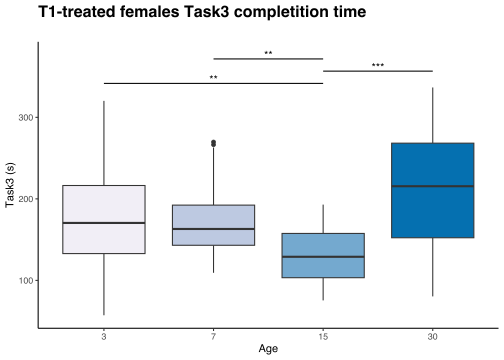

18 Comparing more groups
Last time, we have compared two groups to get if there were differences in their distributions. In this chapter, we will see how to compares more groups.
As mentioned before, if we want to compare groups with a parametric test, we will use the ANOVA, otherwise we will use the Kruskal Wallis test; then, if the test results significant, we will apply post-hoc test to compare the different groups (Tukey’s or Pairwise t-test after ANOVA, or Dunn’s test after Kruskal Wallis test).
Let’s start by loading our data and decide what we want to compare.
# 1. Load packages
suppressPackageStartupMessages(library(tidyverse))
suppressPackageStartupMessages(library(ggplot2))
suppressPackageStartupMessages(library(ggpubr))
suppressPackageStartupMessages(library(gginnards))
suppressPackageStartupMessages(library(glue))
options(dplyr.summarise.inform = FALSE)
# 2. Load data
df <- read.csv("data/Stat-test-dataset.csv")
# 3. Change come column types
df <- df %>%
mutate("sex" = factor(sex),
"treatment" = factor(treatment, levels = c("T1", "Untreated")),
"Task1" = factor(Task1, levels = c(1, 0)),
"Task2" = factor(Task2, levels = c(1, 0)),
)
str(df)'data.frame': 600 obs. of 7 variables:
$ sex : Factor w/ 2 levels "Female","Male": 2 1 2 1 2 1 2 1 2 1 ...
$ age : int 3 3 3 3 3 3 3 3 3 3 ...
$ treatment: Factor w/ 2 levels "T1","Untreated": 2 2 1 1 2 2 1 1 2 2 ...
$ weight : num 6.43 3.42 4.97 4.63 7.31 3.27 5.58 3.27 5.9 4.22 ...
$ Task1 : Factor w/ 2 levels "1","0": 1 2 2 2 1 1 1 1 2 1 ...
$ Task2 : Factor w/ 2 levels "1","0": 1 2 2 1 1 2 2 1 1 1 ...
$ Task3 : num 222.4 202.3 36.7 221.8 178.8 ...Now that we have our data loaded, there are the question we want to address:
- Do untreated males weight more than untreated females mice at all time points?
- Do T1-treated females Task3 completing time changes over time?
Let’s now decide which test to use for each question. We can start by looking at the boxplots and then check parametric assumptions (it’s important to do so!).
But first, we have to subset our dataframe:
# 1. Filter data
untreated_weight_df <- df %>%
filter(treatment == "Untreated") %>%
select(sex, age, treatment, weight) %>%
mutate(age = factor(age))
females_t1_task3_df <- df %>%
filter(sex == "Female" & treatment == "T1") %>%
select(age, treatment, Task3) %>%
mutate(age = factor(age))Then, we will look at the boxplot:
untreated_weight_boxplot <- ggplot(untreated_weight_df) +
geom_boxplot(aes(x = sex, y = weight, fill = sex, group = sex)) +
labs(x = "", y = "Weight (g)", title = "Untreated mice weights") +
facet_wrap(~ age, ncol = 4, scales = "free_y") +
theme_classic() +
theme(legend.position = "none",
plot.title = element_text(face = "bold", size = 16))
females_t1_task3_boxplot <- ggplot(females_t1_task3_df) +
geom_boxplot(aes(x = age, y = Task3, fill = age, group = age)) +
labs(x = "Age", y = "Task3 (s)", title = "T1-treated females Task3 completition time") +
scale_fill_brewer(palette = "PuBu") +
theme_classic() +
theme(legend.position = "none",
plot.title = element_text(face = "bold", size = 16))
ggarrange(untreated_weight_boxplot, females_t1_task3_boxplot, ncol = 1, nrow = 2, labels = "AUTO")Great, we can see some differences. And yes, there are some outliers in B., but we do not want to remove them now, as it is out of the scope of this chapter, but you could try.
We now check the normality and homoschedasticity for each group, and then insert those info in the plot:
# 1. Shapiro test
untreated_weight_shapiro <- untreated_weight_df %>%
group_by(age, sex) %>%
summarise(shap = shapiro.test(weight)$p.value)
females_t1_task3_shapiro <- females_t1_task3_df %>%
group_by(age) %>%
summarise(shap = shapiro.test(Task3)$p.value)
# 2. Bartlett test
untreated_weight_bartlett <- bartlett.test(untreated_weight_df$weight, untreated_weight_df$age, untreated_weight_df$sex)$p.value
females_t1_task3_bartlett <- bartlett.test(females_t1_task3_df$Task3, females_t1_task3_df$age)$p.value
# 3. Get labels position
untreated_weight_shapiro_pos <- untreated_weight_df %>%
group_by(age) %>%
summarise(max = max(weight) + 1)
females_t1_task3_shapiro_pos <- females_t1_task3_df %>%
group_by(age) %>%
summarise(max = max(Task3) + 10)
untreated_weight_shapiro <- untreated_weight_shapiro %>%
left_join(untreated_weight_shapiro_pos, by = "age")
females_t1_task3_shapiro <- females_t1_task3_shapiro %>%
left_join(females_t1_task3_shapiro_pos, by = "age")
# 4. Update boxplots
untreated_weight_boxplot <- untreated_weight_boxplot +
geom_text(data = untreated_weight_shapiro,
mapping = aes(x = sex,
y = max,
label = paste("Shapiro-Wilk\n", round(shap, 3)))
) +
labs(subtitle = paste("Bartlett test p-value:", round(untreated_weight_bartlett, 3)))
females_t1_task3_boxplot <- females_t1_task3_boxplot +
geom_text(data = females_t1_task3_shapiro,
mapping = aes(x = age,
y = max,
label = paste("Shapiro-Wilk\n", round(shap, 3)))
) +
labs(subtitle = paste("Bartlett test p-value:", round(females_t1_task3_bartlett, 3)))
ggarrange(untreated_weight_boxplot, females_t1_task3_boxplot, ncol = 1, nrow = 2, labels = "AUTO")Alright! We can use ANOVA to answer the first question, while we have to use Kruskal Wallis test for the second one.
ANOVA
So, to get if untreated males weight more than untreated females mice at all time points, we should perform a two-way ANOVA test, as we are interested in both sex and age, and in their interaction (to see if the effect of sex changes based on age).
To perform this test, we will use the aov() function, which takes as inputs formula and data. An important note about the formula is how it is written (it will be the same also when we will see other tests):
-
One-way ANOVA:
dependent variable ~ independent variable -
Two-way ANOVA: here situation changes based on what you are interested on. If only on main effects of the two variables
dependent variable ~ independent variable 1 + independent variable 2, if interestend only in the interactiondependent variable ~ independent variable 1:independent variable 2, if in both main effects and interactiondependent variable ~ independent variable 1*independent variable 2
Let’s do it:
Df Sum Sq Mean Sq F value Pr(>F)
sex 1 293 293.4 367.986 <2e-16 ***
age 3 7874 2624.5 3291.977 <2e-16 ***
sex:age 3 2 0.8 1.004 0.391
Residuals 292 233 0.8
---
Signif. codes: 0 '***' 0.001 '**' 0.01 '*' 0.05 '.' 0.1 ' ' 1To better see the results, it is useful to store them in a variable and call summary() out of them. In this way we have all the summary statistics for this test: degree of freedom for each variable (Df), sum of the square root of the variance (Sum Sq), mean square root (Mean Sq), F statistics value and the p-value (Pr(>F)).
From this, we can say that both sex and age main effects are significant, and that the effect of the sex does NOT change at different time point, so we are expecting differences at all age. Let’s test it with post-hoc tests.
Post-hoc test
As ANOVA test is significant for the variable we are interested in (sex), we will perform post-hoc tests. I said tests here just to show you how to perform them, but you can either perform Tukey’s test or pairwise t-test.
We can start by Tukey’s test. It needs the object of the results of the ANOVA and, optionally, which term/s we are interested in (sex:age) for us.
Tukey multiple comparisons of means
95% family-wise confidence level
Fit: aov(formula = weight ~ sex * age, data = untreated_weight_df)
$`sex:age`
diff lwr upr p adj
Male:3-Female:3 2.03526316 1.4098676 2.6606588 0
Female:7-Female:3 2.01284495 1.3832379 2.6424520 0
Male:7-Female:3 3.90879090 3.2791838 4.5383980 0
Female:15-Female:3 5.91421053 5.2888149 6.5396061 0
Male:15-Female:3 7.66368421 7.0382886 8.2890798 0
Female:30-Female:3 13.32798009 12.6983730 13.9575871 0
Male:30-Female:3 15.56311522 14.9335082 16.1927223 0
Female:7-Male:3 -0.02241821 -0.6520253 0.6071889 1
Male:7-Male:3 1.87352774 1.2439207 2.5031348 0
Female:15-Male:3 3.87894737 3.2535518 4.5043430 0
Male:15-Male:3 5.62842105 5.0030255 6.2538166 0
Female:30-Male:3 11.29271693 10.6631099 11.9223240 0
Male:30-Male:3 13.52785206 12.8982450 14.1574591 0
Male:7-Female:7 1.89594595 1.2621554 2.5297365 0
Female:15-Female:7 3.90136558 3.2717585 4.5309726 0
Male:15-Female:7 5.65083926 5.0212322 6.2804463 0
Female:30-Female:7 11.31513514 10.6813446 11.9489257 0
Male:30-Female:7 13.55027027 12.9164797 14.1840608 0
Female:15-Male:7 2.00541963 1.3758126 2.6350267 0
Male:15-Male:7 3.75489331 3.1252863 4.3845004 0
Female:30-Male:7 9.41918919 8.7853986 10.0529797 0
Male:30-Male:7 11.65432432 11.0205338 12.2881149 0
Male:15-Female:15 1.74947368 1.1240781 2.3748693 0
Female:30-Female:15 7.41376956 6.7841625 8.0433766 0
Male:30-Female:15 9.64890469 9.0192976 10.2785118 0
Female:30-Male:15 5.66429587 5.0346888 6.2939029 0
Male:30-Male:15 7.89943101 7.2698239 8.5290381 0
Male:30-Female:30 2.23513514 1.6013446 2.8689257 0At all time points, female weight less than males.
However, I don’t find this results so clear. In fact, I personally prefer to perform pairwise t test:
# 1. Create an interaction factor of sex and age
interaction_factor <- interaction(untreated_weight_df$sex, untreated_weight_df$age)
# 2. Perform pairwise t-tests
pairwise_res <- pairwise.t.test(untreated_weight_df$weight, interaction_factor, p.adjust.method = "bonferroni")
pairwise_res
Pairwise comparisons using t tests with pooled SD
data: untreated_weight_df$weight and interaction_factor
Female.3 Male.3 Female.7 Male.7 Female.15 Male.15 Female.30
Male.3 < 2e-16 - - - - - -
Female.7 < 2e-16 1 - - - - -
Male.7 < 2e-16 4.5e-16 3.2e-16 - - - -
Female.15 < 2e-16 < 2e-16 < 2e-16 < 2e-16 - - -
Male.15 < 2e-16 < 2e-16 < 2e-16 < 2e-16 2.1e-14 - -
Female.30 < 2e-16 < 2e-16 < 2e-16 < 2e-16 < 2e-16 < 2e-16 -
Male.30 < 2e-16 < 2e-16 < 2e-16 < 2e-16 < 2e-16 < 2e-16 < 2e-16
P value adjustment method: bonferroni Tadaaa! I find this table way clearer.
Let’s now create a beautiful figure. In this case, as it is a timeline, I like to create some lineplots with mean and sd.
# 1. Create a function to map *, **, *** and ns to statistics
pvalue_to_plot <- function(x) {
res <- case_when(
x <= 0.001 ~ "***",
x <= 0.01 ~ "**",
x <= 0.05 ~ "*",
.default = "ns"
)
return(res)
}
# 2. Create df of statistics
untreated_weight_stats_pos <- untreated_weight_shapiro_pos %>%
mutate("stats" = pvalue_to_plot(c(pairwise_res$p.value["Male.3", "Female.3"],
pairwise_res$p.value["Male.7", "Female.7"],
pairwise_res$p.value["Male.15", "Female.15"],
pairwise_res$p.value["Male.30", "Female.30"])))
# 3. Create the plot
untreated_weight_lineplot <- ggplot(untreated_weight_df) +
stat_summary(aes(x = age, y = weight, col = sex, group = sex), fun = "mean", geom = "line") +
stat_summary(aes(x = age, y = weight, col = sex, group = sex), fun.data = "mean_sd", geom = "errorbar", width = 0.1) +
stat_summary(aes(x = age, y = weight, col = sex, group = sex), fun = "mean", geom = "point", size = 2) +
geom_text(data = untreated_weight_stats_pos, mapping = aes(x = age, y = max, label = stats)) +
labs(x = "", y = "Weight (g)", title = "Untreated mice weights") +
theme_classic() +
theme(plot.title = element_text(face = "bold", size = 16))I find it very clear, and almost ready to be published!
Kruskal Wallis
It’s now time to check whether T1-treated females Task3 completing time changes over time.
We’ll use kruskal.test() function, which needs as inputs the dependent variable and the independent one (remember: kruskal wallis is the corresponding of the one-way ANOVA, there is not a non parametric test resembling the two-way ANOVA).
Kruskal-Wallis rank sum test
data: females_t1_task3_df$Task3 and females_t1_task3_df$age
Kruskal-Wallis chi-squared = 28.733, df = 3, p-value = 2.549e-06We can say that T1-treated females Task3 time changes in time. How? let’s check it through post-hoc test.
Post-hoc test
The non-parametric post-hoc test is the Dunn’s test. We need to install the dunn.test library (I won’t show how to do so, as you should know…).
The function is dunn.test and requires different inputs: x and g as kruskal.test, method which indicates the p-value correction method. By default, it prints out the output, even when assigning it to a variable; for this reason, we will encapsulate all into capture.output function which will capture the output and put into a file (usually, we will instead use nullfile() to not put it anywhere).
library(dunn.test)
capture.output(dunn_res <- as.data.frame(
dunn.test(x = females_t1_task3_df$Task3, g = females_t1_task3_df$age, method = "bonferroni")
), file = nullfile())
dunn_res chi2 Z P P.adjusted comparisons
1 28.73258 -3.267054 5.433646e-04 3.260188e-03 15 - 3
2 28.73258 -5.265649 6.984754e-08 4.190852e-07 15 - 30
3 28.73258 -1.976887 2.402723e-02 1.441634e-01 3 - 30
4 28.73258 -3.445552 2.849468e-04 1.709681e-03 15 - 7
5 28.73258 -0.156790 4.377052e-01 1.000000e+00 3 - 7
6 28.73258 1.832353 3.344941e-02 2.006964e-01 30 - 7So here we are. It seems that it is only at age of 15 that the T1-treated females change their Task3 completition time. Let’s now put these info into our plot, to make a great figure. I know that there are some packages to perform it, but I want to show how to do it manually.
# 1. Create a df for the statistics
dunn_stat_df <- dunn_res %>%
filter(P.adjusted <= 0.05) %>%
separate(col = comparisons, into = c("x", "xend"), sep = " - ") %>%
mutate(stats = pvalue_to_plot(P.adjusted),
y_segment = c(max(females_t1_task3_df$Task3) + c(5, 20, 35)),
y_stats = y_segment + 5) %>%
select(x, xend, stats, y_segment, y_stats) %>%
rowwise() %>%
mutate(x_stats = mean(match(c(x, xend), levels(females_t1_task3_df$age)))
)
# 2. Remove Shapiro results from plot
females_t1_task3_boxplot <- delete_layers(females_t1_task3_boxplot, "GeomText")
# 3. Add stats
females_t1_task3_boxplot <- females_t1_task3_boxplot +
geom_segment(data = dunn_stat_df, mapping = aes(x = x, xend = xend, y = y_segment, yend = y_segment), col = "black") +
geom_text(data = dunn_stat_df, mapping = aes(x = x_stats, y = y_stats, label = stats), col = "black") +
labs(subtitle = "")
Another great figure to add to our paper! And that’s all for this chapter; in the next one we will see correlation.